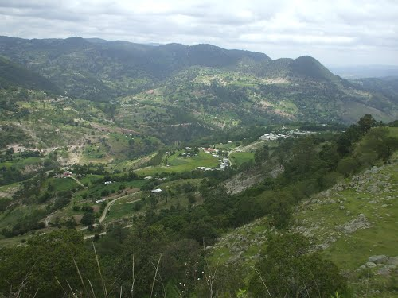
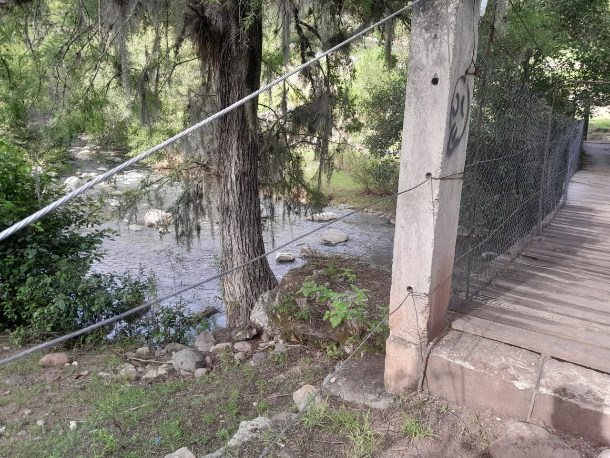
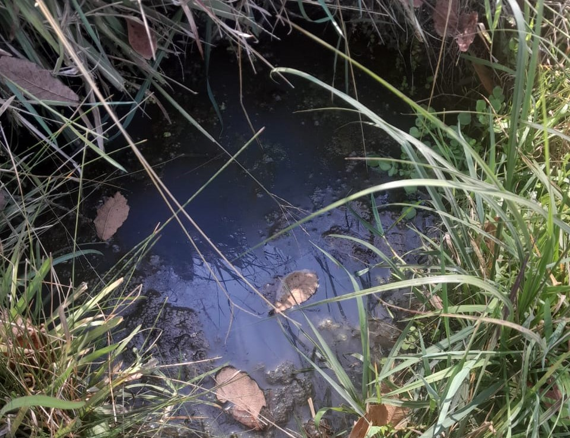

|
| |
La comunidad de Agua Zarca Cuquila en Tlaxiaco, Oaxaca, ofrece varios aspectos interesantes.Como la loma de las trescruses que es la montaña mas alta de la comunidad,el cual sirve como mirador hacia la comunidades de Cuquila,Atayiqui y Agua Zarca,ya que es muy alta y se puede observar todo su alrededor .  El rio que se encuentra en la comunidad que sirbe como colindancia con la comunidad vecina de Benito Juarez,el cual cuenta con varias partes para disfrutar de un dia soleado ya sea en familia o con amigos.  "Agua Zarca": El término "agua zarca" puede referirse a aguas de color azulado, limpia y cristalina.  |